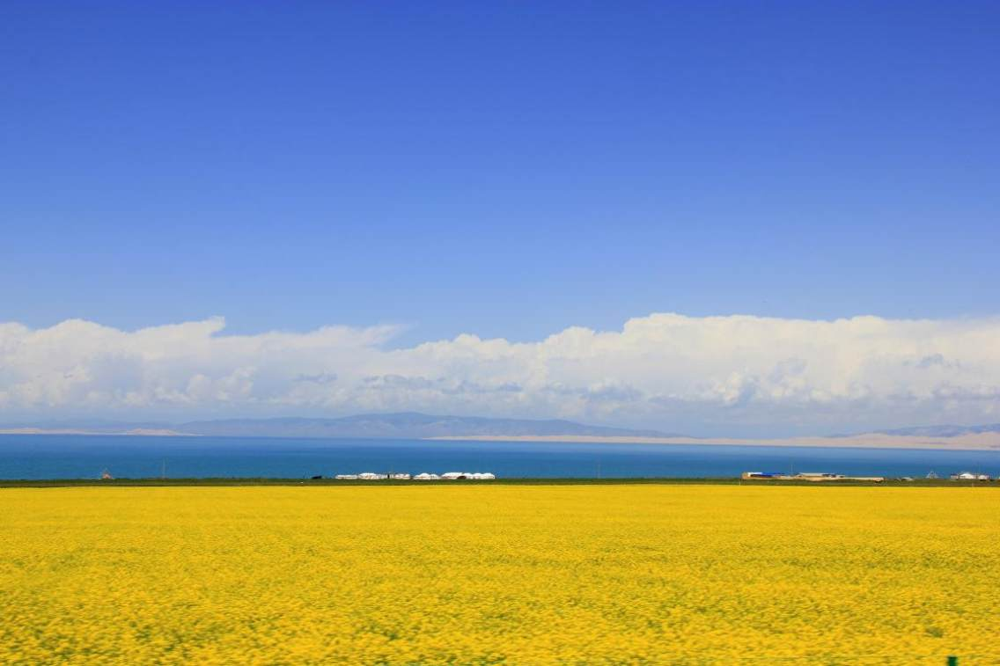

青海省位于青藏高原东北部，东西长约１２００公里，南北宽８００公里，面积为７２万平方公里。境内山脉高耸，地形多样，河流纵横，湖泊棋布。
巍巍昆仑山横贯中部，唐古拉山峙立于南，祁连山矗立于北，茫茫草原起伏绵延，柴达木盆地浩瀚无限。长江、黄河之源头在青海，中国最大的内陆高原咸水湖也在青海，因此而得名“青海”。

青海湖，藏语名为“措温布”（意为“青色的海”）。位于青藏高原东北部、青海省境内，中国最大的内陆湖。由祁连山脉的大通山、日月山与青海南山之间的断层陷落形成。
青海湖是中国内陆最大咸水湖，是维系青藏高原东北部生态安全的重要水体。
茶卡盐湖，别称茶卡或达布逊淖尔,是柴达木盆地四大盐湖之一。“茶卡”是藏语，意即盐池，也就是青海的盐；“达布逊淖尔”是蒙古语，也是盐湖之意。
茶卡盐湖与塔尔寺、青海湖、孟达天池齐名，是“青海四大景”之一，被旅行者们称为中国“天空之镜”，被国家旅游地理杂志评为“人一生必去的55个地方”之一。
北山国家森林公园位于青海省海东市互助土族自治县东北部，境内群峰巍峨，山清水秀，天高云淡，空气洁净，高原特色突出，是旅游避暑、疗养度假、科普考察的胜地。
公园由元甫达坂、浪士当、卡索峡、扎龙沟、下河五大景区组成，兼有雄、奇、险、秀四大特色，主要景点有“达坂红叶、龙尾观云、擎天一柱、圣母天池、石龙烟雨、高山牧场、药水瀑布”等80余处。
塔尔寺是中国藏传佛教格鲁派（黄教）六大寺院之一，也是青海省首屈一指的名胜古迹和全国重点文物保护单位。2018年4月13日，入围“神奇西北100景”。
酥油花、壁画和堆绣被誉为“塔尔寺艺术三绝”，另外寺内还珍藏了许多佛教典籍和历史、文学、哲学、医药、立法等方面的学术专著。每年举行的佛事活动“四大法会”，更是热闹非凡。塔尔寺的酥油花雕塑也是栩栩如生，远近闻名。
卓尔山属于丹霞地貌，由红色砂岩、砾岩组成。藏语称为"宗穆玛釉玛"，意为美丽的红润皇后。
站在卓尔山顶视野极度开阔，四周没有任何遮拦，山对面是一山尽览四季景色的牛心山，左右两侧分别是拉洞峡和白杨沟风景区，背面是连绵起伏的祁连山，山脚下滔滔八宝河像一条白色的哈达环绕在县城周边。处处美景，宛如仙境，令人心旷神怡。
青海可可西里国家级自然保护区位于青海省玉树藏族自治州西部，总面积450万公顷。是21世纪初世界上原始生态环境保存较好的自然保护区，也是中国建成的面积最大，海拔最高，野生动物资源最为丰富的自然保护区之一。
青海可可西里国家级自然保护区主要是保护藏羚羊、野牦牛、藏野驴、藏原羚等珍稀野生动物、植物及其栖息环境。
祁连山脉，位于中国青海省东北部与甘肃省西部边境，是中国境内主要山脉之一。
祁连山素有“万宝山”之称，蕴藏着种类繁多、品质优良的矿藏，有石棉矿，黄铁矿、铬铁矿及铜、铅、锌等多种矿产，八宝山的石棉为国内稀有的“湿纺”原料。祁连山区冷湿气候，有利于牧草生长，在海拔2800米以上的地带，分布有大片草原、为发展牧业提供了良好场所。
门源油菜花是指青海省海北藏族自治州的门源县一种美丽而蔚为壮观的人造景观。门源县是北方小油菜发源地，是全国乃至全世界最大的小油菜种植区，种植面积达50万亩。
门源的油菜花气势壮观，北依祁连山，西起永安城，东到玉隆滩，南邻大坂山，绵延上百公里，宛如金黄的大海。浓艳的黄花，紧沿着浩门河畔，横越门源盆地足有百公里，在高原深蓝的天空下，与远山近水，村落人家相辉映,近看远观皆为美景。
相传，文成公主远嫁松赞干布时曾经过此山。她在峰顶翘首西望，远离家乡的愁思油然而生，不禁取出临行时皇后所赐“日月宝镜”观看，镜中顿时现出长安的迷人景色。
公主悲喜交加，不慎失手，把“日月宝镜”摔成两半，正好落在两个小山包上，东边的半块朝西，映著落日的余辉，西边的半块朝东，照着初升的月光，日月山由此得名。
龙羊峡,是黄河流经青海大草原后，进入黄河峡谷区的第一个峡谷，“龙羊”系藏语，即险峻沟谷之意，峡口只有30米宽，峡谷全长33公里，坚硬的花岗岩两壁直立近200米高，是建设水电站的绝佳坝址。
1976年国家决定兴建龙羊峡水电站，坝址就选于此峡口，电站建成后这里成了黄河上游第一座大型梯级电站所在地；因水电站的建成，当地旅游业兴起，龙羊峡谷成为也被称为“中国的科罗拉多”大峡谷，名扬海外。